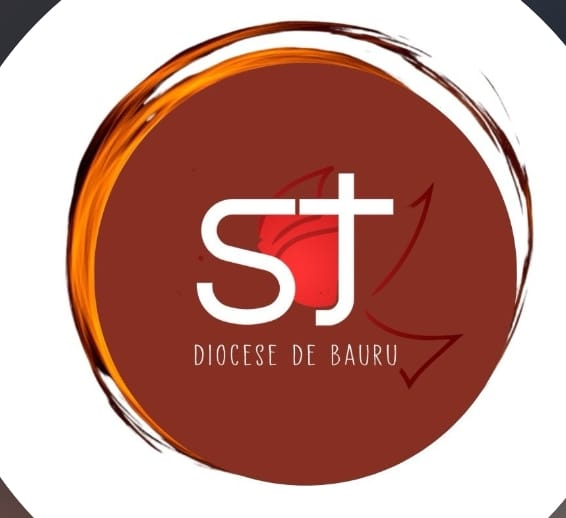
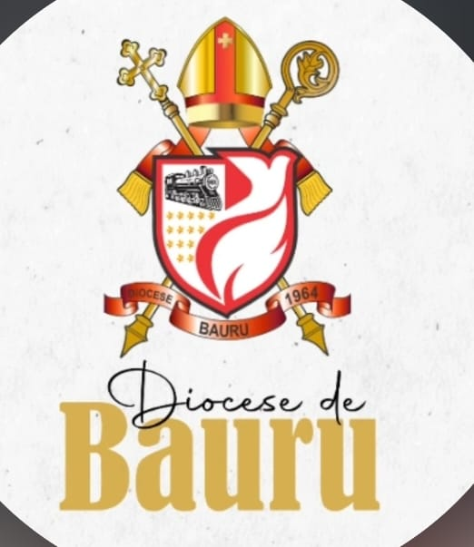

Fé
Um encontro para fortalecer a relação dos jovens com Deus e com a Igreja.


Setor Juventude da Diocese de Bauru
Um encontro de fé, formação, espiritualidade, comunhão e missão para as juventudes da Diocese de Bauru.
Dia Nacional da Juventude
O Dia Nacional da Juventude foi um momento de encontro, oração e participação para os jovens, grupos, movimentos e lideranças da Diocese de Bauru.
Um encontro para fortalecer a relação dos jovens com Deus e com a Igreja.
Um espaço de convivência entre grupos, movimentos, comunidades e paróquias.
Um convite para que cada jovem seja protagonista da evangelização e da transformação da sociedade.
Informações principais
Confira as principais informações do Dia Nacional da Juventude de 2026.
18 de outubro de 2026
Ginásio Duduzão – FIB, Bauru/SP
Das 7h30 às 8h30
Evento realizado
Experiência do encontro
O encontro foi organizado para proporcionar acolhida, espiritualidade, formação e convivência.
Recepção dos participantes e organização inicial das caravanas, grupos e movimentos.
Momentos de oração, reflexão e comunhão para fortalecer a caminhada dos jovens.
Atividades para promover conhecimento, integração e protagonismo juvenil.
Apresentações, experiências missionárias e praça de alimentação durante o evento.
Projeto de Desenvolvimento Web Responsivo
Esta página foi desenvolvida como um projeto de aprendizagem, aplicando estrutura semântica, identidade visual, acessibilidade, Flexbox, CSS Grid e adaptação para diferentes telas.
Voltar ao início